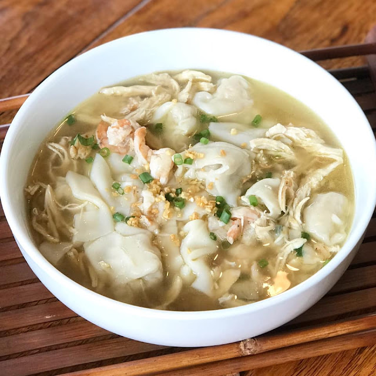

Pansit Molo

Pansit Molo an Ilonggo delicacy
Pancit Molo also known as Molo Soup is the Filipino version of dumpling or wonton soup.
Pancit Molo originated from Molo district in Iloilo City which happen to be my hometown.
There are few versions on how to make Pancit Molo and this is one of the simpler one.
Simple but very delicious and comforting.
Pancit Molo balls or the dumplings used is composed of ground pork, shrimps and basic
ingredients. The Molo soup is made of chicken breast and shrimp simmered on chicken
broth and seasoned with basic spices. The main foundation of this Pancit Molo soup
recipe is a good stock. FYI, in Iloilo City, we call the dumplings Pansit Molo.
Pancit Molo is a traditional Ilonggo dish that resembles the Chinese wonton soup with a
slightly different flavor, but if you ask me, Pancit Molo has more flavor and maybe even
better.
A specialty of Iloilo City, this soup does not have any noodles, but the dumplings or
Molo balls and the broth make it an incredible snack or a meal itself.
The molo balls or the dumplings ingredients creates 60-75 dumplings, but the broth only
requires 12 dumplings which is good for 3 to 4 servings. The rest can be frozen for
future use.
This simple Pancit Molo recipe is worth a try. Make it now and share with family and
friends. Make a bunch of the dumplings and save it for later use. Save this recipe or
Pin It and share! The comforting flavors of pork, shrimp and chicken mix together to a
create a delicious soup dish.
Molo Balls (Dumplings) Ingredients
- 1 lb ground pork
- 1/2 lb shrimp, peeled and chopped
- 5 cloves of garlic, minced
- 1 medium onion, chopped
- 2 large egg
- 1 tbsp sesame oil
- 1/2 tsp ground black pepper
- 1 tsp salt or to taste
- 1/2 cup chopped green onion
- 60-75 pieces wonton wrapper
- 1 egg white
Molo Balls (Dumplings) Preparation Procedures
-
In a bowl, combine all above ingredients (not including the wrapper and the egg
white). Cover bowl and refrigerate for at least an hour.
-
When ready, place 1/3 teaspoon of meat mixture to the wonton wrapper. Brush sides
with egg white, roll, and press sides. Brush sides with egg white again, fold and
press to seal.
-
Repeat instruction #2 until all pork mixture is completely consumed and wrappers all
used.
Molo Broth Ingredients
-
1 1/2 chicken boneless breast (you will only need a cup so save some for later use)
- 5 cups of water
- 1 bay leaf
- 2 tbsp canola or olive oil
- 5 cloves of garlic, minced
- 1 medium onion, chopped
- 1/2 lb shrimp, peeled and deveined
- 1 knorr chicken cube
- 1/2 tsp ground pepper
- 1 cup chicken broth or stock
- salt to taste
- 1 tsp sesame oil
- 2 tbsp chopped green onions
Molo Broth Preparation Procedures
-
In a deep pot, add water, chicken breast and bay leaf. Boil for about 20-25 minutes.
Remove chicken from the broth, allow to cool, and shred. Set aside.
-
In a deep pot, heat and add oil. Fry garlic until light brown and crisp. Remove and
set aside for later use.
-
Using the same pot and oil, saute onions until limp. Add 1 cup shredded chicken
breast and stir. Add knorr chicken cube and ground pepper. Stir to combine.
-
Pour-in chicken broth or stock and the remaining broth from boiling the chicken. Add
more water if needed. Cover pot and simmer over medium heat for about 15 minutes.
Taste to see if salt is needed.
-
Drop 12-15 Molo balls one by one. Simmer until the balls float to the top. Add
sesame oil and stir. Add green onions and do a quick stir. Turn off the heat and
transfer in a serving bowl. Sprinkle with fried garlic and serve hot. Enjoy!